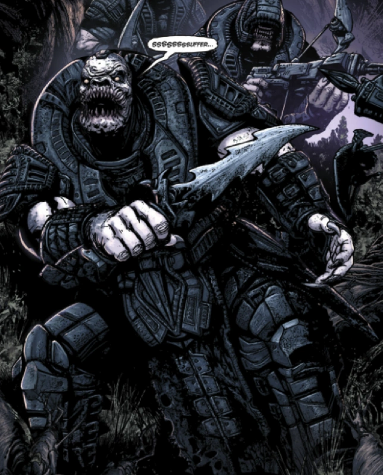
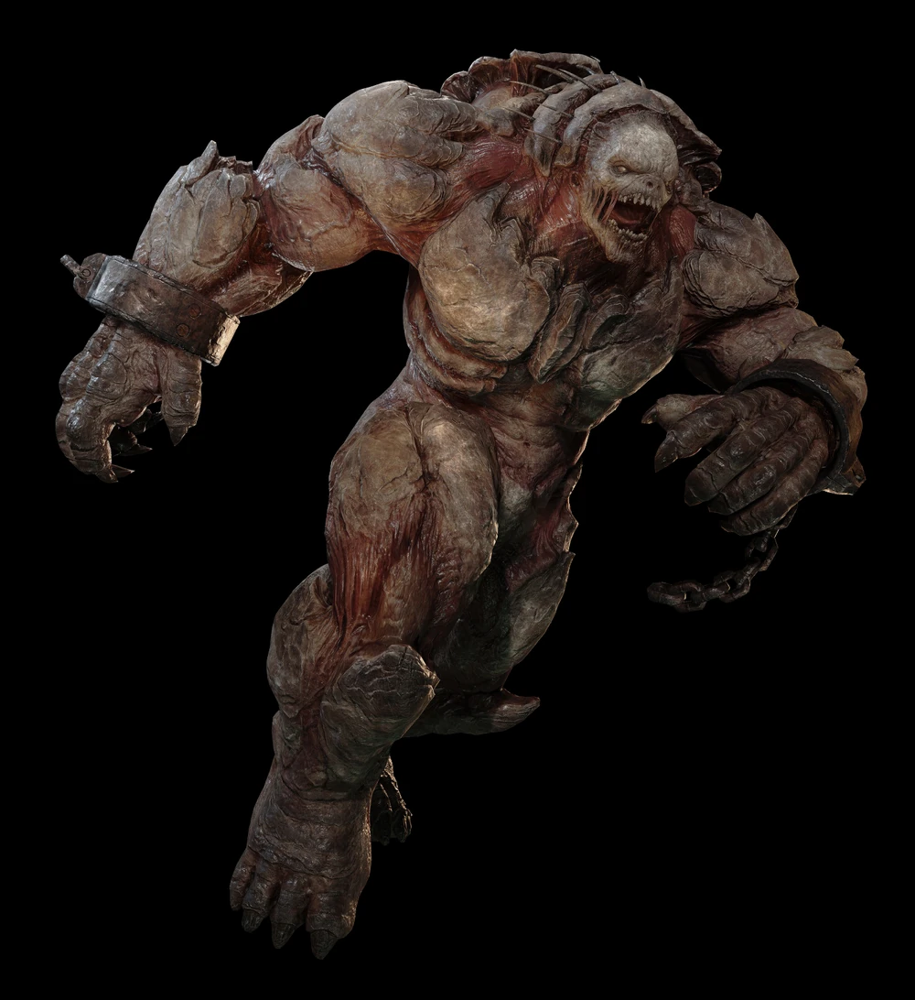

Locust
RAAM

Uzil RAAM was the High General of the Locust Army. RAAM was once a Drone soldier, then a member of the Theron Guard. His skill, intellect, strength, and his loyalty to the Horde and Queen Myrrah earned him the title of head of the military leadership of the Locust Horde.
RAAM led the Bloodied Vanguard with Skorge against the Lambent during the Lambent War. He was also a member of the Locust Council during the Lambent War. RAAM had a passion to wipe out all of the Lambent and Humanity, and with his intelligence and willpower, he almost succeeded. Find out more...
Drone

Drones, usually referred to as Grubs by Gears, are the foot soldiers of the Locust Horde. Completely loyal to their Queen, the Drones are willing to toss their lives away in a second to kill a single Gear. The Drones are said to be bred by Queen Myrrah herself. Locust Drones are genetically altered humans, the result of an experiment conducted by Dr. Niles Samson to find a cure for Rustlung.
Children of afflicted Imulsion miners were spliced with the DNA from indigenous creatures of the Hollow, transforming them into Sires. Sire DNA was combined with the embryonic stem cells of Myrrah, a human born with a genetic immunity to Imulsion, and produced the first Locust Drones. Many different classes of Drones specialize in different forms of combat. They are born and bred for combat, fearless even when outnumbered.
There have been reports of Drones appearing on the surface stealing children and other humans decades before Emergence Day, but these had turned into nothing more than fairy tales and urban legends. Find out more...
Berserker

Berserkers were female Locust Drones. Known for their highly developed sense of hearing and smell to compensate for their myopic blindness, extremely durable bodies, and being in a near-constant state of extremely aggressive behavior; Berserkers were used for destroying fortifications and hunting the Locust's enemies.
The first Berserker was created by Dr. Niles Samson during the mid-Pendulum Wars, employed by a fringe syndicate of the Coalition of Ordered Governments to continue his genetic research in curing Rustlung and creating enhanced soldiers to use against the Union of Independent Republics.
In a laboratory built in the caverns of Mount Kadar, Samson attempted to create a hybrid species with the Sires, human children of Imulsion miners afflicted with Rustlung and transformed by the DNA of animals from the Hollow in Samson's transgenic experiments. Find out more...